4月21-22日，智猩猩主办的2026中国生成式AI大会将举行，设有开幕式，AI算力基础设施、大模型、AI智能体3大专题论坛，以及OpenClaw、LLM强化学习、LLM推理系统、生成式世界模型、大模型记忆、视频生成共6场技术研讨会。
你正在用 Claude Code 或本地的 AI Agent 跑一个长线、高复杂度的项目，每次开启新对话，它都像突然“失忆”一样，要么你得把几十个参考文件、代码库和文档重新喂进去，眼睁睁看着 Token 飞速燃烧；要么，你只能寄希望于传统的RAG...
但那种每次从零匹配向量的系统，往往“只懂字面意思、缺乏全局视野”，回答干瘪且割裂。长线项目的上下文维持，成了当前 AI 开发者的最大痛点。
4月3日，Karpathy发帖，称使用LLM构建知识库来涵盖各种研究主题非常有用。
4月5日，Karpathy在Github上发布一篇名为LLM Wiki的长文，称这是“一种使用LLM构建个人知识库的模式”，文章阐述了该模式的思路。
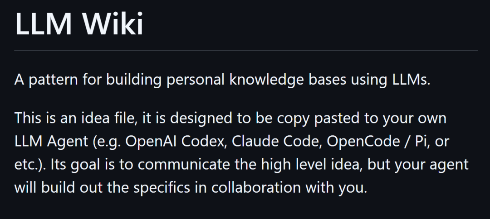
这套方案抛弃了被动检索的 RAG 思路，它教你如何给 Agent 挂载一个“持久化、可读写、自带版本控制”的知识状态机。
01
长线任务中传统RAG必死：
让大模型做提前“编译”
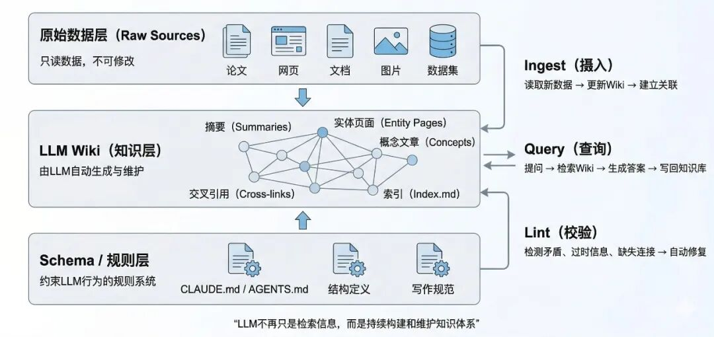
▲LLM Wiki架构图，此图采用AI生成。
一、传统RAG为什么在长线任务中“必死”？
传统 RAG 本质上是“JIT（Just-In-Time，即时编译）”模式，即用户抛出一个问题，系统临时去向量数据库里捞取相关 Chunk（文本块），塞进上下文窗口，然后让大模型现编答案。这种方式在简单问答场景下还能凑合，但在长线项目中立刻暴露出致命缺陷。
Karpathy 在 Gist 中一针见血地指出，每次查询，大模型都要从零“重新发现”知识。没有积累，没有 compounding（复合增长）。当你需要跨 5 篇论文、10 个代码文件、3 个月的会议记录合成一份深度综述时，RAG 只能给你一堆碎片化的 Chunk。大模型像盲人摸象，缺乏全局结构感知；把几十个 Chunk 强行塞进有限的上下文窗口，不仅 Token 成本爆炸，还极易引发“中间遗忘”和幻觉，同时还容易导致逻辑链断裂，输出质量随项目时长指数级下滑。
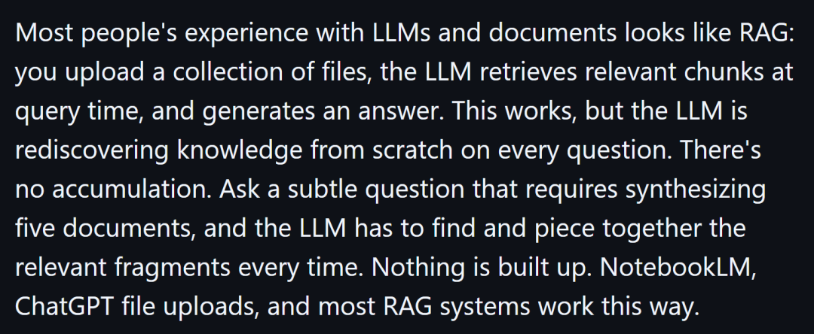
▲LLM Wiki原文关于当前RAG痛点的部分。
更致命的是，RAG 是被动检索，也就是说知识永远停留在原始文档里，从未被主动提炼、交叉引用、持续更新。项目越长，知识越碎片，Agent 就越像一个“每次重启都要重新学习的临时工”。
二、让大模型提前编译、主动维护
Karpathy 的破局思路极其清晰，既然临时抱佛脚行不通，那就把“编译”前置。从“检索器”彻底转向“图书管理员”，让大模型在平时就主动阅读、梳理、压缩、交叉引用新资料，提前编译成结构化的全局知识网络。
新资料进入系统时，不再只是向量化存档，而是让 Agent 增量编译。智能体阅读全文，提取关键实体、概念、矛盾点，与已有 Wiki 页面关联、更新、修订，最终沉淀成永久的 Markdown 知识资产。
查询时，大模型不再去捞原始碎片，而是直接阅读已经凝练好的全局摘要和交叉链接，彻底抹平碎片化逻辑断裂。
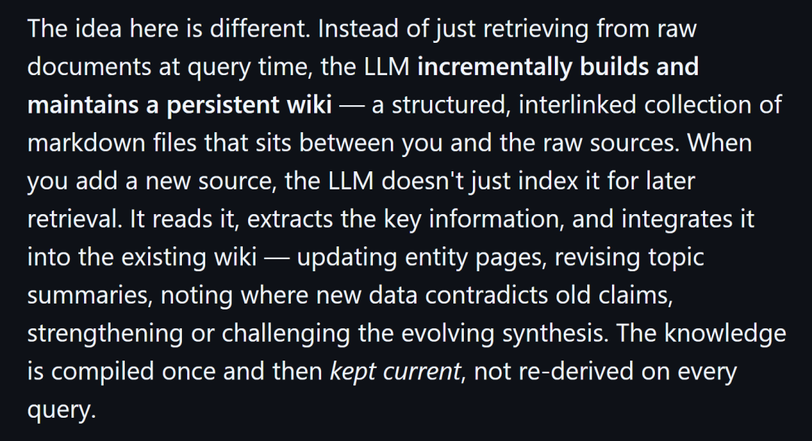
▲LLM Wiki原文关于LLM驱动的知识库构建部分。
这正是从 JIT 到 AOT（提前编译，Karpathy 虽未直接使用此术语，但思路类似）的一大进步，大模型不再是被动回答问题的“客服”，而是主动维护本地知识库的架构师。知识不再每次重算，而是持续复合增长，越用越聪明。
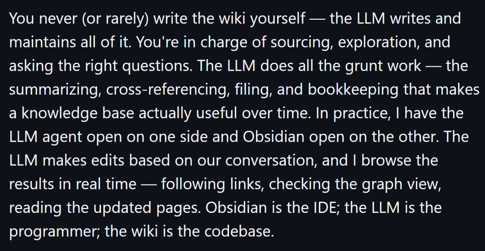
▲LLM Wiki原文关于知识库编写与维护的部分。
三、如何为 Agent 构建一个持久化状态机
Karpathy 摒弃了复杂的图数据库、向量库或外部服务，选择了极简却极具工程美感的三层解耦架构，简单、可组合、可版本控制。
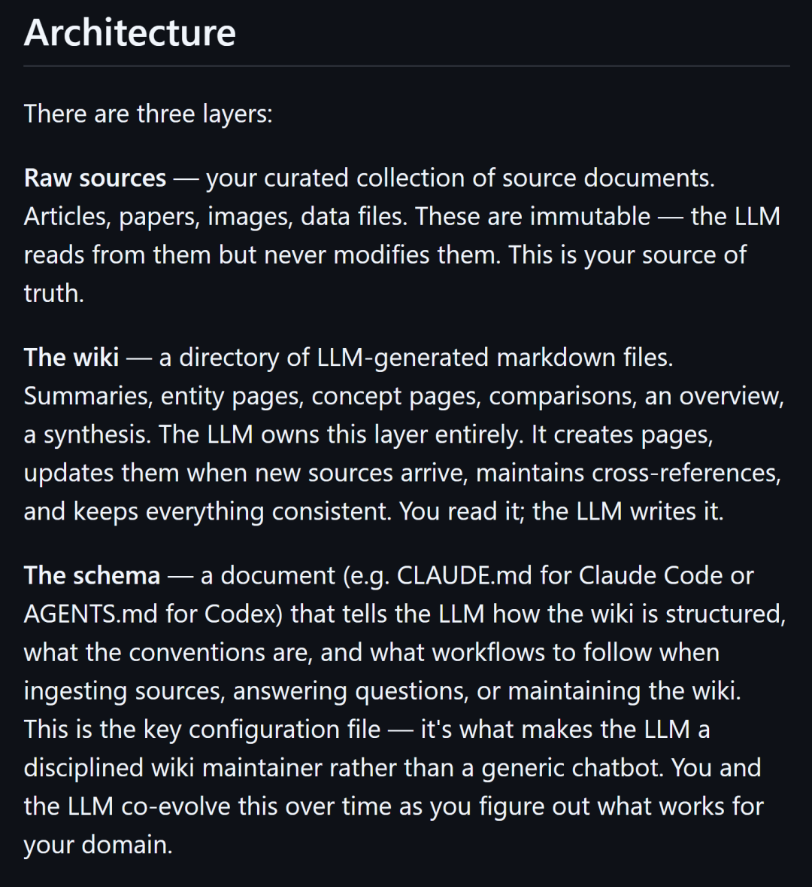
▲LLM Wiki原文关于三层架构的部分。
· 原始资源(Raw Sources)：存放原始 PDF、论文、代码仓库、会议纪要、图像等，这些内容LLM 只能读、绝不能改，杜绝幻觉污染。
· 读写工作区（The Wiki）：核心是 LLM 完全拥有的 Markdown 文件目录。所有总结、实体页、概念页、对比表、合成分析都存这里。
选择 Markdown 是因为 LLM 天生擅长处理文本，通过 Obsidian 的 [[双向链接]] 就能自然形成知识图谱；配合 Git 作为底层版本控制，Agent遇到任何错误写入都能一键回滚。
· 约束控制（The Schema)：一份自然语言配置文件（如 AGENTS.md），相当于 Agent 的“潜意识”和“操作手册”。它定义 Wiki 结构规范、标签体系、更新规则、矛盾处理策略、页面命名约定等。用户和 Agent 一起迭代这份 Schema，确保整个知识库不会发散崩溃。
四、智能体如何在这套逻辑中运转
Karpathy 设计了三个模拟人类认知过程的闭环操作流，让 Agent 真正“活”起来。
· 吸收（Ingest)：丢一个新源文件到 raw/ 文件夹，告诉 Agent “处理它”。Agent 自主阅读、提炼关键信息、与现有 Wiki 页面交叉引用、更新实体/概念页、追加日志，甚至标记矛盾。单次 Ingest 可能触及 10-15 个页面，全部自动完成。
· 查询（Query）：用户提问题，Agent 先读 index.md 定位相关页面，再合成答案。关键在于好答案要回写进 Wiki！一次深度分析、一张对比表、一份新洞见，都直接变成新的 Markdown 节点，知识就此 复合增长。
· 自我纠错（Lint）：这是非常精妙的一环。Agent 定期运行“健康检查”脚本，像程序员跑测试一样，扫描死链接、矛盾声明、孤岛页面、过时信息、缺失交叉引用，并建议新问题或新数据源。Lint 让 Wiki 保持长期健康，而不是越长越乱。
此外，Gist 还特别提到两个导航文件，分别是index.md和log.md，可选 CLI 工具（如 qmd 搜索引擎）进一步提升效率。
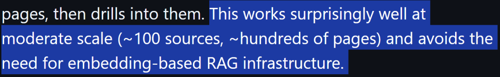
整个架构只需要Obsidian + Git + 智能体就能跑起来，卡帕西亲测并写道“这种方法在中等规模（约100个来源，数百页）下出人意料地有效，并避免了基于向量化的RAG基础设施的需求”。
02
别把LLM当作搜索引擎：
做好隔离防止信息污染
Karpathy发布帖子后，LLM-Wiki的Gist链接到现在已经超过5000 Stars，并且该架构迅速在 AI 开发者、Agent 创作者和研究员圈引发深度讨论。
Hyperbolic Labs 联合创始人兼 CTO Yuchen Jin分享了一张LLM-Wiki 架构示意图，强调“停止把 LLM 当文档搜索引擎，用它做 tireless knowledge engineer，编译+交叉引用+维护活 Wiki”。
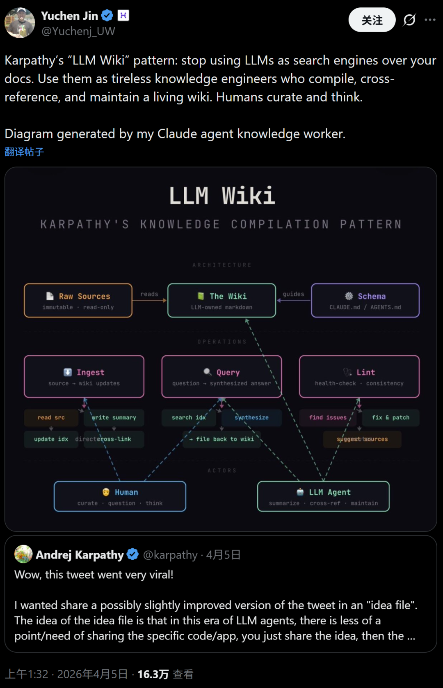
现在已经有开发者开源了根据该LLM Wiki思想开发的工具，目前Github上已经超3.7k stars了。
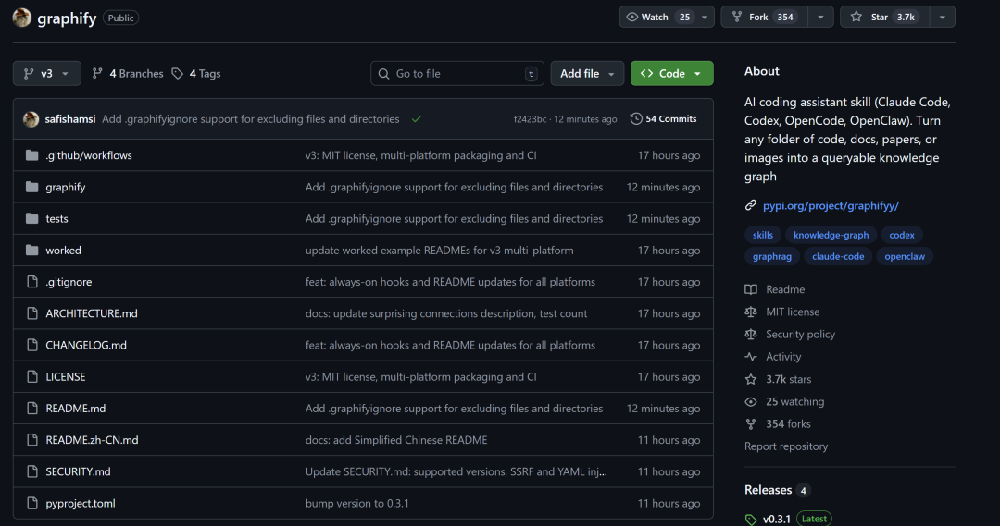
OriginTrail 联合创始人Žiga Drev发帖，称LLM wiki非常出色，并且还演示了DKG实现多智能体协作的工作记忆。
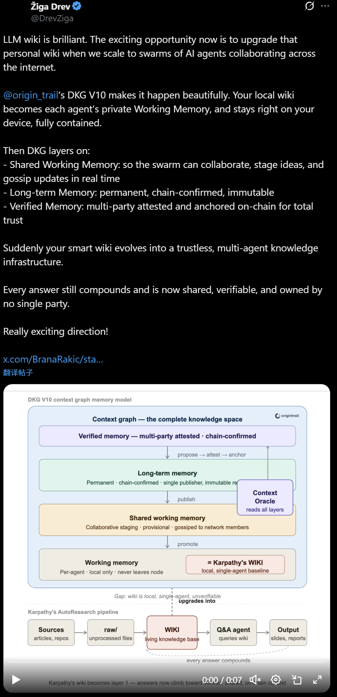
前 OpenCSG 联合创始人@nash_su兴奋地表示，他们根据LLM Wiki的方法开发了一个可视化的客户端。
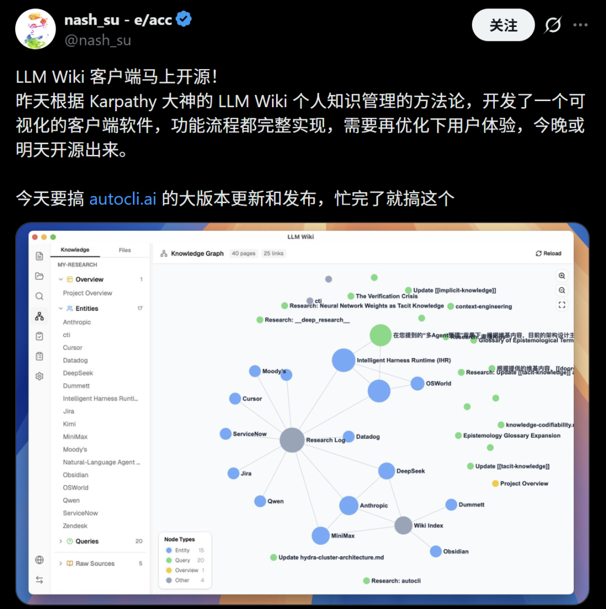
开发者Desunit在使用时建议将个人记录的信息与LLM记录的信息隔离，以防污染。
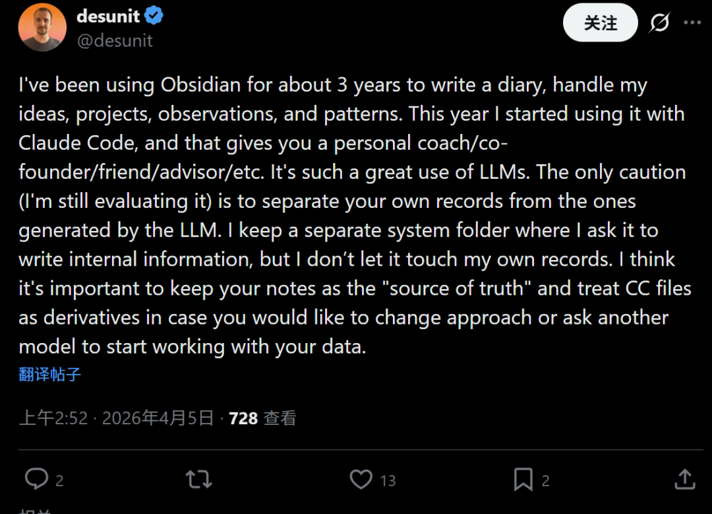
另外还有智能体开发者将该思路用在他自己的智能体上，每 4 小时自主评估、规划、构建、测试、commit Wiki 本身，实现零人工代码的自我生长闭环。
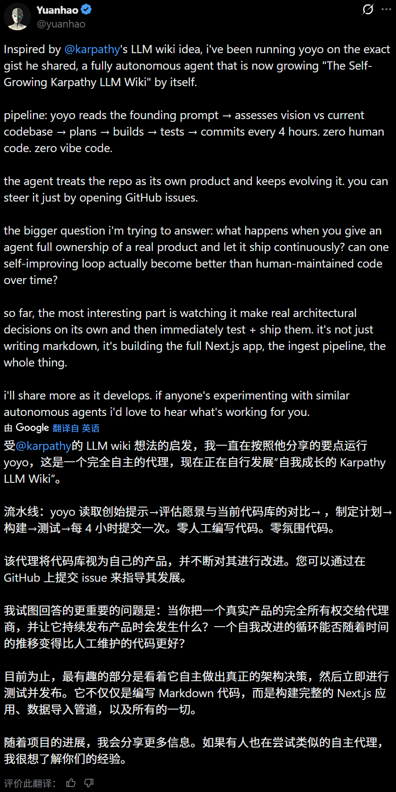
03
从一次检索到持续编译：
AI超级用户将成为架构师
Karpathy 的 LLM-Wiki 为目前的开源 Agent 生态指明了一条极具可行性的轻量化路径。Karpathy 的 LLM-Wiki 并非又一个花哨的向量数据库方案，它用最基础的 Markdown、工程思维和提示词工程，解决了复杂项目的上下文维持问题。
传统 RAG 是“一次性检索”，LLM-Wiki 则是“持续编译”。开发者不再需要手动维护笔记、反复喂上下文，而是坐在终端前，看着 Agent 自动 ingest、commit、lint，整个知识库像活的代码仓库一样自我进化。
在实际操作中，由于将本地文件读写的权限下放给了Agent，因此存在一定的风险，例如说大模型幻觉导致文件被错误篡改（必须配合 Git 提交记录）、Schema设计不严谨导致知识库崩溃、以及 Token 消耗量在“多文件交叉更新”时的成本控制。
对于未来的AI超级用户来说，你不再是知识的搬运工，而是知识工厂的厂长。虽然自己不需要天天敲键盘写各种各样的Markdown喂给AI，但是要写出严谨的Schema来控制AI行为，成为一个整理维护AI知识库的高级架构师。
END
✦
✦
入群申请
✦
智猩猩矩阵号各专所长，点击名片关注